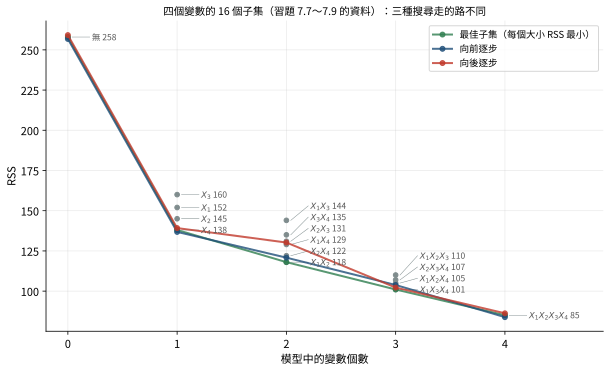
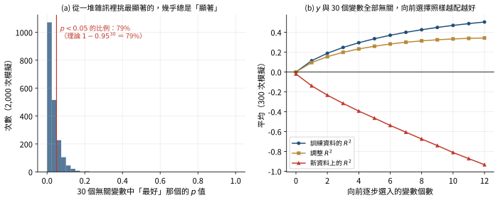
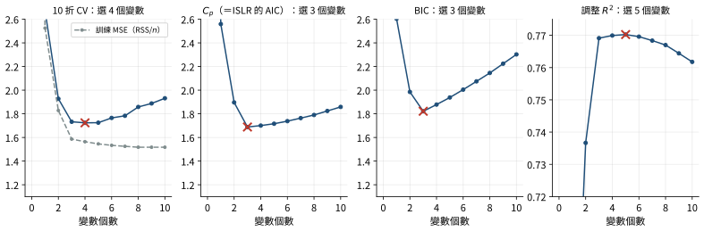
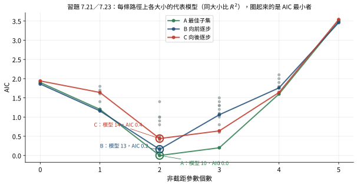

7.1 子集選擇 一、最佳子集選擇
\(k\) 個候選變數，每個可以放或不放，共有 \(2^k\) 個模型。全部配適一遍，再挑最好的，叫做最佳子集選擇 （best subset selection）。「最好」怎麼判斷，要看比較的模型變數個數是否相同：
變數個數相同 ：RSS 較小（等價地，\(R^2\) 較大）的較好。變數個數不同 ：不能直接比 RSS，要用交叉驗證，或 \(C_p\)、AIC、BIC、調整 \(R^2\) 這四個統計量之一（7.2 節）。
為什麼變數個數不同時不能比 RSS
設模型 B 包含模型 A 的所有變數再多幾個（A 巢狀 於 B 之中）。B 的最小平方是在比較大的參數集合上求最小值：把 B 多出來的係數設為 0，就得到 A 的任何一組配適，所以
\[\text{RSS}_B=\min_{\text{B 的參數}}\sum_i(y_i-\hat y_i)^2\le\min_{\text{A 的參數}}\sum_i(y_i-\hat y_i)^2=\text{RSS}_A .\]
不管新變數多麼不相干，RSS 都不會增加，而且幾乎一定會減少。所以比 RSS 一定是「越大的模型越好」，無法反映預測能力。
（講義註腳：兩個不巢狀 的模型，\(d+1\) 個變數的那個 RSS 有可能比 \(d\) 個變數的大。但只要巢狀時 RSS 必然下降，就足以說明 RSS 不是比較不同大小模型的好指標。）
ISLR 把最佳子集選擇寫成兩階段：
令 \(\mathcal M_0\) 為只有截距的模型（預測值都是 \(\bar y\)）。
對 \(d=1,2,\dots,k\)：在 \(\binom kd\) 個恰有 \(d\) 個變數的模型中，取 RSS 最小者為 \(\mathcal M_d\)。
用交叉驗證或 \(C_p\)、AIC、BIC、調整 \(R^2\)，從 \(\mathcal M_0,\dots,\mathcal M_k\) 中選一個。
Frees 也提到「best regressions」程序：找出指定變數個數的最佳模型，也就是第 2 步。
\(k\) 大時 \(2^k\) 個模型配不完：\(k=20\) 就超過一百萬（\(2^{20}=1{,}048{,}576\)）。這時需要啟發式（heuristic）的方法：向前逐步與向後逐步。
二、向前逐步選擇
向前逐步選擇 （forward stepwise selection）：
從空模型（只有截距，\(\hat y=\bar y\)）開始。
把 \(k\) 個變數各自加入，配出 \(k\) 個模型，取 RSS 最小者。
在這個模型上，把剩下 \(k-1\) 個變數各自加入，配出 \(k-1\) 個模型，取 RSS 最小者。
重複，直到 \(k\) 個變數都進入模型。
得到每種大小各一個模型，共 \(k+1\) 個，用交叉驗證或四個統計量之一選出最後的模型。
要配適幾個模型
空模型 1 個；第一步 \(k\) 個；第二步 \(k-1\) 個；……；最後一步 1 個。
\[1+\sum_{i=0}^{k-1}(k-i)=1+(k+(k-1)+\cdots+1)=1+\frac{k(k+1)}{2} .\]
\(k=20\) 時是 211 個，遠少於最佳子集的 1,048,576 個。
向前逐步是貪婪 （greedy）的演算法：每一步只挑眼前最好的，不考慮「現在選一個次好的，之後可能得到更好的模型」。所以不保證選到最佳模型。講義的例子：
變數
RSS
變數
RSS
變數
RSS
無
875
\(X_1\)
472
\(X_1,X_2\)
420
\(X_2\)
500
\(X_1,X_3\)
432
\(X_3\)
491
\(X_2,X_3\)
412
一個變數時 \(X_1\) 最好，向前法接著只會考慮含 \(X_1\) 的 \(\{X_1,X_2\}\) 與 \(\{X_1,X_3\}\)，選到 RSS 420 的 \(\{X_1,X_2\}\)。\(\{X_2,X_3\}\) 的 RSS 412 更低，卻永遠不會被看到。
\(n<k\) 時仍可使用 ：只是最多只能做到 \(n-1\) 個變數的模型 \(\mathcal M_{n-1}\)（\(n-1\) 個變數加截距共 \(n\) 個係數，剛好把 \(n\) 筆資料配到殘差全為 0；再多就無法唯一估計）。
三、向後逐步選擇
向後逐步選擇 （backward stepwise selection）：
從包含全部 \(k\) 個變數的完整模型開始。
對每個變數，配出拿掉它、只用其他 \(k-1\) 個變數的模型，共 \(k\) 個，取 RSS 最小者。
在這個模型上重複：每次拿掉一個變數，配出 \(k-1\)、\(k-2\)、……個模型。
直到沒有變數為止。得到每種大小各一個模型，共 \(k+1\) 個，再用交叉驗證或統計量選擇。
配適的模型數同樣是 \(1+k(k+1)/2\)。同樣不保證選到最佳模型。和向前法不同，\(k>n\) 時不能使用 ：第一步的完整模型參數比資料還多，算不出有意義的結果。

習題 7.7～7.9 的資料：四個變數的 16 個子集，橫軸是變數個數、縱軸是 RSS。綠線是最佳子集（每個大小 RSS 最小的模型）：\(X_4\)、\(X_1X_2\)、\(X_1X_3X_4\)。藍線是向前逐步：先選 \(X_4\)，之後只能在含 \(X_4\) 的模型裡挑，兩個變數時選 \(X_2X_4\)（122），錯過了最佳的 \(X_1X_2\)（118），三個變數時選 \(X_1X_2X_4\)（105），也錯過了 \(X_1X_3X_4\)（101）。紅線是向後逐步：從全模型拿掉 \(X_2\) 得到最佳的 \(X_1X_3X_4\)，但再拿掉一個只能在 \(\{X_1,X_3,X_4\}\) 的子集裡選，得到 \(X_1X_4\)（129），同樣錯過 \(X_1X_2\)。 四、混合法
混合法 （mixed selection，或 hybrid）：像向前法一樣一次加入一個變數，但加入後若有變數不再有幫助，就把它拿掉。步驟：
從只有截距的模型開始。
對每個尚未使用的變數，配出加入它的模型，選 RSS 最好的。
檢查模型中的每個變數。若有變數的 \(t\) 比值低於事先設定的門檻，拿掉 \(t\) 比值最低的那一個。這是 Frees 的版本；ISLR 的版本是：若有變數的 \(p\) 值高於事先設定的門檻，拿掉 \(p\) 值最高的那一個。兩者相似但不完全相同，因為 \(t\) 比值換成 \(p\) 值還要看自由度。
重複第 2、3 步，直到沒有變數符合加入或刪除的門檻。
Frees 的逐步迴歸就是這種混合法：加入的門檻是 \(|t|\) 超過某個值（例如 2），刪除的門檻是 \(|t|\) 低於某個值。有些軟體改用 \(F\) 檢定，一次只考慮一個變數時 \(F=t^2\)，兩者等價。
五、類別變數
所有子集選擇方法都是一次加入或刪除一個參數 。有兩類以上的類別變數，一個類別的指標就是一個參數，所以最後的模型可能只包含部分 類別的指標；沒被選入的類別，實際上就被併入基準類別（第 2 章的指標變數 ）。
例：「車型」有雙門跑車、轎車、休旅車、廂型車四類，以轎車為基準類別，有三個指標。向前逐步第一步選入了「休旅車」的指標，這個模型實際上把雙門跑車和廂型車都當成基準類別（和轎車同一組）。
計算模型個數時，要先把類別變數換算成指標個數（習題 7.3、7.4）。
六、逐步迴歸的七個缺點（Frees）
資料窺探 （data snooping）：對同一份資料配適大量模型，總有一些碰巧看起來很好。統計上常用 95% 信賴水準，所以每 20 個錯誤的模型就有 1 個會被接受；試過 100 個模型，大約會找到 5 個看起來不錯的假模型。忽略了「所有模型都不對」的可能：真正的關係可能是非線性的，資料也可能有離群值或高槓桿點。
只考慮了 \(2^k\) 個模型中的一部分，沒被考慮的模型可能更好。
只用 \(t\) 比值決定加入或刪除，沒有考慮 \(s\)、\(R^2\)、調整 \(R^2\) 等其他統計量。
這是一連串的檢定，最後模型的真正顯著水準比單次 \(t\) 檢定的顯著水準差。若每次加入都有 95% 的把握是對的，兩次都對的機率就低於 95%。
變數一個一個加入，沒有考慮兩個變數一起 加入的效果（例如第 5 章的抑制變數）。向後法因為一開始所有變數都在模型裡，比較能顧到聯合效果。
自動化程序不會用到研究者的額外知識。例如研究者可能知道 2015 年發生了特殊事件，那一年的資料不尋常。

資料窺探的模擬：\(n=50\) 筆，\(y\) 和 30 個候選變數**完全無關**。(a) 2,000 次模擬中，把 30 個變數各自和 \(y\) 做簡單迴歸，取最顯著的那一個，它的 \(p\) 值有 79% 的時候小於 0.05（若變數彼此獨立，理論值 \(1-0.95^{30}=79\%\)）。(b) 用向前逐步一路選入 12 個變數：訓練資料的 \(R^2\) 一路升到 0.5，調整 \(R^2\) 也升到 0.35，但模型在新資料上的 \(R^2\) 一路變負，比直接猜平均還差。 這一節的精選習題
以 62 筆觀察配適最小平方模型，考慮 22 個不同的預測變數，用向後逐步選擇挑出最佳的預測變數。求共配適幾個模型。
隱藏解答 解析
先配適完整模型（1 個），接著拿掉 1 個變數的模型 22 個、再拿掉 1 個的 21 個、……，最後只剩一個變數時拿掉它得到只有截距的模型（1 個）：
\[1+\sum_{i=1}^{22}i=1+\frac{22(23)}{2}=1+253=254 .\]
\(n=62>k=22\)，完整模型可以配適，向後法可行。
以 30 筆觀察配適常態線性模型，預測變數為：AGE（類別：未滿 30、30～39、40～49、50～59、60 以上）、SEX（男或女）、BLOOD PRESSURE（實數）、NUMBER OF CHILDREN（整數）。用向前逐步選擇挑出最佳預測變數。求共配適幾個模型。
隱藏解答 解析
第一步：換算成參數個數。 AGE 有 5 類，需要 4 個指標；SEX 1 個；血壓 1 個；子女數 1 個；共 \(k=7\)。
第二步：計數。 只有截距的模型 1 個，接著依序考慮 7、6、5、4、3、2、1 個加入的候選：
\[1+\sum_{j=0}^{6}(7-j)=1+\frac{7(8)}{2}=29 .\]
\(n=30\) 足夠配適全部 7 個變數。
易錯
把 AGE 當成 1 個變數會得到 \(1+4(5)/2=11\)。逐步法一次加入一個參數 （指標），不是一整個類別變數。
常態線性模型以 26 筆觀察為基礎，考慮 100 個預測變數，用向前逐步選擇。求共配適幾個模型。
隱藏解答 解析
最多能做到幾個變數。 有截距時，26 筆觀察最多支撐 26 個係數，也就是 25 個預測變數（\(\mathcal M_{n-1}=\mathcal M_{25}\)）；再多，\(X\) 的欄就不可能線性獨立。
計數。 只有截距 1 個；第 1 步 100 個候選；第 2 步 99 個；……；第 25 步 \(100-24=76\) 個。等差數列的和是首末項平均乘項數：
\[1+\sum_{j=0}^{24}(100-j)=1+\frac{(100+76)(25)}{2}=1+2200=2201 .\]
易錯
不能套 \(1+k(k+1)/2=5051\)；\(n<k\) 時向前法在 \(n-1\) 個變數就停了。
（7.7～7.9 共用）以四個變數 \(\{X_1,X_2,X_3,X_4\}\) 的子集建立最小平方模型，各模型的 RSS：
變數
RSS
變數
RSS
變數
RSS
變數
RSS
\(X_1\)
152
\(X_1,X_2\)
118
\(X_2,X_4\)
122
\(X_1,X_3,X_4\)
101
\(X_2\)
145
\(X_1,X_3\)
144
\(X_3,X_4\)
135
\(X_2,X_3,X_4\)
107
\(X_3\)
160
\(X_1,X_4\)
129
\(X_1,X_2,X_3\)
110
\(X_1,X_2,X_3,X_4\)
85
\(X_4\)
138
\(X_2,X_3\)
131
\(X_1,X_2,X_4\)
105
無
258
最佳子集選擇選出的三變數模型是哪一個？
隱藏解答 解析
最佳子集直接比較所有三變數模型的 RSS：\(\{X_1,X_2,X_3\}\) 110、\(\{X_1,X_2,X_4\}\) 105、\(\{X_1,X_3,X_4\}\) 101、\(\{X_2,X_3,X_4\}\) 107。最小的是 101。三種方法的路徑見 7.1 節的圖。
（接 7.7）向前逐步選擇選出的三變數模型是哪一個？
隱藏解答 解析
一個變數：RSS 最小的是 \(X_4\)（138）。
兩個變數，必須含 \(X_4\)：\(\{X_1,X_4\}\) 129、\(\{X_2,X_4\}\) 122、\(\{X_3,X_4\}\) 135，選 \(\{X_2,X_4\}\)。
三個變數，必須含 \(X_2,X_4\)：\(\{X_1,X_2,X_4\}\) 105、\(\{X_2,X_3,X_4\}\) 107，選 \(\{X_1,X_2,X_4\}\)。
它不是最佳的三變數模型（101），因為向前法第一步選了 \(X_4\) 之後，第二步沒選到含 \(X_1,X_3\) 的組合。
易錯
第二步不能直接選全部兩變數模型中最好的 \(\{X_1,X_2\}\)（118）：它不含已經選入的 \(X_4\)。
7.2 選擇最佳模型 上面每種方法都替每個變數個數選出一個模型，接著要在這些大小不同的模型之間做選擇。有兩條路：
交叉驗證 （第 6 章）：直接估計測試誤差。計算量大，但最準確，而且幾乎不需要假設。調整訓練誤差 ：訓練資料上的 RSS 低估了測試誤差，用一個隨參數個數增加的懲罰把它「加回來」。\(C_p\)、AIC、BIC、調整 \(R^2\) 都屬於這一類。用這些統計量時，RSS 是用全部資料 算的，不需要留出測試資料。
一、訓練誤差低估了多少
推導：期望的測試誤差平方和比 RSS 多 \(2(d+1)\sigma^2\)
固定 \(X\)，設 \(\mathbf y=\boldsymbol\mu+\boldsymbol\varepsilon\)，\(\operatorname{Var}(\boldsymbol\varepsilon)=\sigma^2I\)。用 \(d\) 個變數加截距配適，帽子矩陣 \(H\) 的跡是 \(d+1\)（第 5 章）。\(\boldsymbol\mu\) 不必在模型的欄位空間裡，也就是模型可以有偏差。
訓練誤差。 \(\mathbf y-\hat{\mathbf y}=(I-H)\boldsymbol\mu+(I-H)\boldsymbol\varepsilon\)，交叉項期望值為 0，
\[E(\text{RSS})=\|(I-H)\boldsymbol\mu\|^2+\sigma^2\operatorname{tr}(I-H)=\|(I-H)\boldsymbol\mu\|^2+(n-d-1)\sigma^2 .\]
測試誤差。 在同樣的 \(X\) 上重新抽一組獨立的反應 \(\mathbf y^*=\boldsymbol\mu+\boldsymbol\varepsilon^*\)，用原來的配適值預測：
\[\mathbf y^*-\hat{\mathbf y}=\boldsymbol\varepsilon^*+(I-H)\boldsymbol\mu-H\boldsymbol\varepsilon,\]
三項兩兩的交叉期望值都是 0，
\[E\|\mathbf y^*-\hat{\mathbf y}\|^2=n\sigma^2+\|(I-H)\boldsymbol\mu\|^2+\sigma^2\operatorname{tr}(H)=\|(I-H)\boldsymbol\mu\|^2+(n+d+1)\sigma^2 .\]
相減。 偏差項 \(\|(I-H)\boldsymbol\mu\|^2\) 剛好消掉：
\[E(\text{測試 SSE})-E(\text{RSS})=2(d+1)\sigma^2 .\]
所以 \(\dfrac1n\big(\text{RSS}+2(d+1)\hat\sigma^2\big)\) 是測試 MSE 的不偏估計（\(\hat\sigma^2\) 不偏時）。每多一個參數，訓練誤差就多低估 \(2\sigma^2\)，這就是 \(C_p\) 與 AIC 懲罰項的來源。ISLR 的公式用 \(2d\hat\sigma^2\)（不算截距），只差一個所有模型共同的常數 \(2\hat\sigma^2/n\)，不影響比較。
二、Mallows 的 \(C_p\)
設完整模型有 \(k\) 個變數，用它估計誤差變異數：
\[\hat\sigma^2=s^2=\frac{\text{RSS}_k}{n-k-1} .\]
考慮一個 \(d\) 個變數（\(d<k\)）的子模型，殘差平方和 \(\text{RSS}_d\)。ISLR 的定義：
\[C_p=\frac1n\big(\text{RSS}_d+2d\hat\sigma^2\big)\qquad(7.2)\]
Frees 的定義（講義的寫法）：
\[C_p=\frac{\text{RSS}_d}{s^2}-n+2d\qquad(7.1)\]
兩者看起來很不一樣，但選出的模型相同：(7.1) 去掉與模型無關的 \(-n\)，把 \(2d\) 併進分數得 \(\dfrac{\text{RSS}_d+2ds^2}{s^2}\)；再把分母從 \(s^2\) 換成 \(n\)（兩者都與模型無關）就是 (7.2)。精確地說，\(C_p^{\text{Frees}}=\dfrac{n}{s^2}C_p^{\text{ISLR}}-n\)，是遞增的線性轉換，排序完全一樣。\(C_p\) 越小越好 。
\(C_p\) 裡的「\(p\)」數不數截距
Mallows 原始的定義是 \(C_p=\text{RSS}/s^2-n+2p\)，\(p\) 是係數個數（含截距），模型沒有偏差時 \(E(C_p)\approx p\)，所以常說「好的模型 \(C_p\) 接近 \(p\)」。講義與它的習題解答把 \(p\) 當成解釋變數個數 （習題 7.13 算出 \(-0.5\)）；若含截距則每個模型都多 2（變成 1.5）。兩種算法選出的模型一樣，只有數值不同。考試若要算數值，照題目指定的教科書公式。
若 \(\hat\sigma^2\) 是 \(\sigma^2\) 的不偏估計，ISLR 的 \(C_p\) 是測試 MSE 的不偏估計（上一小節的推導）。
三、AIC 與 BIC
線性迴歸最大化資料的概似。加入變數後，最大概似不可能下降（把新係數設為 0 就回到原模型的概似），幾乎一定會上升，不管新變數有沒有意義。所以直接比概似不行。後面會學到概似比檢定 ，它替「加入變數」設門檻，但只能比較巢狀 模型。
赤池資訊準則 （Akaike information criterion，AIC）與貝氏資訊準則 （Bayesian information criterion，BIC）是加上懲罰的負對數概似，可以比較任何 模型，不論是否巢狀。令 \(l\) 為最大對數概似、\(p\) 為估計的參數個數：
\[\text{AIC}=-2l+2p,\qquad\text{BIC}=-2l+p\ln n .\]
兩者都越小越好 。BIC 每個參數的懲罰 \(\ln n\) 在 \(n\ge8\) 時就大於 AIC 的 2（\(e^2\approx7.39\)），所以 BIC 選出的模型通常變數比較少。
推導：Frees 的線性迴歸 AIC（7.3）
\(k\) 個解釋變數、常態誤差 \(N(0,\sigma^2)\) 的線性迴歸，\(n\) 筆觀察的概似是
\[L=\prod_{i=1}^n\frac{1}{\sigma\sqrt{2\pi}}\exp\left(-\frac{(y_i-\sum_j\beta_jx_{ij})^2}{2\sigma^2}\right).\]
取對數：
\[l=\ln L=-\frac{\sum_i(y_i-\sum_j\beta_jx_{ij})^2}{2\sigma^2}-n\ln\sigma-n\ln\sqrt{2\pi} .\]
在最小平方估計處，分子就是 RSS，所以
\[-2l=\frac{\text{RSS}}{\sigma^2}+2n\ln\sigma+2n\ln\sqrt{2\pi}=\frac{\text{RSS}}{\sigma^2}+n\ln\sigma^2+n\ln(2\pi) .\]
用通常的 \(s^2=\text{RSS}/(n-k-1)\) 代替 \(\sigma^2\)，第一項變成 \(n-k-1\)：
\[-2l=n\ln s^2+n\ln(2\pi)+n-k-1 .\]
參數有 \(k+1\) 個 \(\beta\)，再加上 \(\sigma^2\)，共 \(k+2\) 個，所以加上 \(2(k+2)\)：
\[\text{AIC}=n\ln s^2+n\ln(2\pi)+n+k+3\qquad(7.3)\]
比較模型時 \(n\ln(2\pi)\) 與 \(n+3\) 都是常數，剩下 \(n\ln s^2+k\)：AIC 在「\(s^2\) 下降」與「變數增加」之間取捨。對應的 BIC 只要把懲罰 \(2(k+2)\) 換成 \((k+2)\ln n\)（習題 7.26）。
ISLR 的做法不同：它不用每個模型自己的 \(s^2\)，而是像 \(C_p\) 一樣用完整模型 的 \(\hat\sigma^2\) 當作已知的 \(\sigma^2\)。這樣 \(n\ln\hat\sigma^2\)、\(n\ln(2\pi)\) 都是常數，可以丟掉，剩下 \(\text{RSS}/\hat\sigma^2\)。加上每個參數 2（AIC）或 \(\ln n\)（BIC）的懲罰，ISLR 用變數個數 \(d\) 代替參數個數，再整個乘上 \(\hat\sigma^2/n\)：
\[\text{AIC}=\frac1n\big(\text{RSS}+2d\hat\sigma^2\big)\qquad(7.4)\]
\[\text{BIC}=\frac1n\big(\text{RSS}+(\ln n)\,d\hat\sigma^2\big)\qquad(7.5)\]
所以 ISLR 的 AIC 和它的 \(C_p\) 完全相同 ，選出的模型也相同；BIC 對加入參數的懲罰較重。講義認為考題若要算 AIC 或 BIC，會說明用哪個公式；最可能考的是「\(-2l\) 加上 \(2p\) 或 \(p\ln n\)」。
四、調整 \(R^2\)
\[\text{調整 }R^2=1-\frac{\text{RSS}_d/(n-d-1)}{\text{TSS}/(n-1)}\qquad(7.6)\]
有時記為 \(R_a^2\)。分母 \(\text{TSS}/(n-1)\) 和模型無關，分子就是模型的 \(s^2\)，所以調整 \(R^2\) 最大，等價於 \(s^2\) 最小 。\(d\) 增加時 \(n-d-1\) 變小，分子變大，調整 \(R^2\) 變小，所以 RSS 必須下降得夠多，才值得多加一個變數。用 \(R^2\) 表示：
\[\text{調整 }R^2=1-\left(\frac{\text{RSS}_d}{\text{TSS}}\right)\left(\frac{n-1}{n-d-1}\right)=1-(1-R^2)\left(\frac{n-1}{n-d-1}\right)\qquad(7.7)\]
調整 \(R^2\) 可能是負的（習題 7.34），而且 越大越好 ，和 \(C_p\)、AIC、BIC 相反。\(C_p\)、AIC、BIC 都有以大樣本為基礎的理論根據；調整 \(R^2\) 則是比較隨意（ad hoc）的指標，沒有強的理論支持。
推導：每個準則「多加一個變數」的門檻
在 \(d\) 個變數的模型上多加一個變數，RSS 減少 \(\Delta=\text{RSS}_d-\text{RSS}_{d+1}\)。新變數的 \(t\) 統計量滿足（第 4 章的部分 \(F\)，分子自由度 1）
\[t^2=F=\frac{\Delta}{\text{RSS}_{d+1}/(n-d-2)}=\frac{\Delta}{s_{d+1}^2} .\]
調整 \(R^2\) ：上升 \(\Leftrightarrow\) \(s^2\) 下降 \(\Leftrightarrow\dfrac{\text{RSS}_{d+1}}{n-d-2}<\dfrac{\text{RSS}_{d+1}+\Delta}{n-d-1}\)。兩邊乘開：\((n-d-1)\text{RSS}_{d+1}<(n-d-2)\text{RSS}_{d+1}+(n-d-2)\Delta\)，即 \(\text{RSS}_{d+1}<(n-d-2)\Delta\)，也就是
\[t^2>1 .\]
\(C_p\) 與 ISLR 的 AIC ：下降 \(\Leftrightarrow\Delta>2\hat\sigma^2\)。BIC ：下降 \(\Leftrightarrow\Delta>(\ln n)\hat\sigma^2\)。若 \(\hat\sigma^2\approx s_{d+1}^2\)，這兩個條件分別約等於 \(t^2>2\) 與 \(t^2>\ln n\)。
準則
加入一個變數的條件（約略）
方向
調整 \(R^2\)
\(t^2>1\)
越大越好，最寬鬆，傾向選大模型
\(C_p\)／AIC
\(\Delta\text{RSS}>2\hat\sigma^2\)，約 \(t^2>2\)
越小越好
BIC
\(\Delta\text{RSS}>(\ln n)\hat\sigma^2\)，約 \(t^2>\ln n\)
越小越好，\(n=100\) 時約 \(t^2>4.6\)，最嚴格
5% 的 \(t\) 檢定
\(t^2>t_{0.025}^2\approx4\)
作為對照
例題 7A（講義）
30 筆觀察、5 個參數（含截距）的線性模型，RSS 為 100，反應變數的不偏樣本變異數為 40，迴歸的殘差變異數為 10。用 ISLR 的公式求 \(C_p\)、AIC、BIC 與調整 \(R^2\)。
\(d=4\) 個變數，\(\hat\sigma^2=10\)。
\[C_p=\frac1{30}\big(100+2(4)(10)\big)=\frac{180}{30}=6,\qquad\text{AIC}=C_p=6,\]
\[\text{BIC}=\frac1{30}\big(100+(\ln30)(4)(10)\big)=\frac{100+136.05}{30}=7.868 .\]
TSS\(/(n-1)\) 就是反應的樣本變異數 40，所以
\[\text{調整 }R^2=1-\frac{100/(30-4-1)}{40}=1-\frac{4}{40}=0.9 .\]
五、用哪一個

模擬：\(n=100\)、10 個候選變數（彼此有相關），真正有用的只有 3 個。對每個大小做最佳子集選擇，再用各準則挑大小。訓練 MSE（灰虛線）隨變數個數一路下降。10 折 CV 選 4 個、\(C_p\)（即 ISLR 的 AIC）與 BIC 都選 3 個、調整 \(R^2\) 選 5 個。調整 \(R^2\) 的曲線在 3 到 7 個變數之間非常平，懲罰最輕，所以傾向選比較大的模型。
\(C_p\)、AIC、BIC 都要估計 \(\sigma^2\)，而且要知道模型的參數個數；交叉驗證兩者都不需要，適用範圍最廣，也最準確，只是計算量大。
交叉驗證曲線常常在最低點附近很平。ISLR 建議一個標準誤法則 ：先算出每個大小的 CV 估計與它的標準誤，在「CV 值不超過最低點加一個標準誤」的模型中，選最簡單的那個。
考試技巧
方向 ：\(C_p\)、AIC、BIC 越小越好；\(R^2\)、調整 \(R^2\) 越大越好。同樣大小的模型 比 RSS 或 \(R^2\) 就夠了，所有準則的懲罰都相同（習題 7.19 的 II、7.21、7.23）。AIC／BIC 的參數個數 ：線性迴歸照 Frees 要算截距與 \(\sigma^2\)，\(p=k+2\)；題目直接給「參數個數」或「使用的自由度」時照題目。從 AIC 換算 BIC：減掉 \(2p\)、加上 \(p\ln n\)。
調整 \(R^2\) 的 \(n-1\) 可以從 ANOVA 表的自由度相加得到：迴歸自由度 \(+\) 誤差自由度 \(=n-1\)。
計算模型個數時，先把類別變數換成指標個數；最佳子集 \(2^k\)，逐步法 \(1+k(k+1)/2\)；\(n\) 不夠大時向前法只能做到 \(n-1\) 個變數。
本章公式總表（講義表 7.1）
向前／向後逐步的模型個數：\(1+k(k+1)/2\)；最佳子集：\(2^k\)。
\(C_p\)（ISLR）：\(\dfrac1n\big(\text{RSS}_d+2d\hat\sigma^2\big)\) (7.2)；\(C_p\)（Frees）：\(\dfrac{\text{RSS}_d}{s^2}-n+2d\) (7.1)。\(\hat\sigma^2=s^2\) 取自完整模型。
一般的 AIC：\(-2l+2p\)；一般的 BIC：\(-2l+p\ln n\)（\(p\) 為參數個數）。
線性迴歸的 AIC（ISLR）：\(\dfrac1n\big(\text{RSS}_d+2d\hat\sigma^2\big)\) (7.4)；（Frees）：\(n\ln s^2+n\ln(2\pi)+n+k+3\) (7.3)。
線性迴歸的 BIC（ISLR）：\(\dfrac1n\big(\text{RSS}_d+(\ln n)d\hat\sigma^2\big)\) (7.5)。
調整 \(R^2\)：\(1-\dfrac{\text{RSS}_d/(n-d-1)}{\text{TSS}/(n-1)}=1-(1-R^2)\dfrac{n-1}{n-d-1}\) (7.6)(7.7)。
這一節的精選習題
（MAS-I 2018 秋 #31）精算師對同一份資料配適兩個 GLM，\(M_1\) 與 \(M_2\)，預測顧客購買汽車保險的機率：
模型
解釋變數
使用的自由度
對數概似
\(M_1\)
報價、車輛數、主被保險人年齡、前一家保險公司
10
\(-11{,}565\)
\(M_2\)
報價、車輛數、主被保險人年齡、主被保險人性別、主被保險人信用分數
8
\(-11{,}562\)
精算師想判斷哪個模型較好。最好的做法是：
(A) 概似比檢定 (B) 算 \(F\) 統計量做 \(F\) 檢定 (C) 計算並比較兩個模型的離差（deviance） (D) 計算並比較兩個模型的 AIC (E) 算卡方統計量做卡方檢定
隱藏解答 解析
兩個模型不巢狀 ：\(M_2\) 沒有 \(M_1\) 的「前一家保險公司」，又多了 \(M_1\) 沒有的兩個變數。概似比檢定與離差的比較只適用於巢狀模型，(A)、(C) 不行；\(F\) 檢定是線性模型用的，(B) 不行；(E) 與此無關。AIC 可以比較任何模型。
順便算出來：\(\text{AIC}_1=2(11{,}565)+2(10)=23{,}150\)，\(\text{AIC}_2=2(11{,}562)+2(8)=23{,}140\)，\(M_2\) 較好（對數概似較高、參數又較少）。
以 60 筆觀察配適多個常態線性模型。每個固定解釋變數個數下 RSS 最低的模型：
解釋變數個數
0
1
2
3
4
最低 RSS
326
314
303
293
284
Mallows 的 \(C_p\) 選出的模型有幾個解釋變數？
隱藏解答 解析
完整模型 是 4 個變數的那個：\(\hat\sigma^2=\dfrac{284}{60-5}=5.163636\)。用 ISLR 的 \(C_p=\frac1{60}(\text{RSS}_d+2d\hat\sigma^2)\)：
\(d\)
\(\text{RSS}_d+2d\hat\sigma^2\)
\(C_p\)
0
\(326\)
5.4333
1
\(314+10.327=324.327\)
5.4055
2
\(303+20.655=323.655\)
5.3942
3
\(293+30.982=323.982\)
5.3997
4
\(284+41.309=325.309\)
5.4218
最小的是 \(d=2\)。
捷徑 ：多加一個變數的懲罰是 \(2\hat\sigma^2=10.33\)，RSS 下降超過 10.33 才值得。RSS 的下降依序是 12、11、10、9，前兩次超過、第三次（10）不到，所以停在 2。
易錯
\(\hat\sigma^2\) 要用最大的模型，而且自由度是 \(60-4-1=55\)。
有截距的線性模型用子集選擇挑變數，以 100 筆觀察為基礎。總平方和為 4184，15 個預測變數全部放入時 RSS 為 252。用 Mallows 的 \(C_p\) 在不同變數個數的模型中選擇。5 個預測變數的最佳模型 RSS 為 474；6 個預測變數的最佳模型 RSS 小於 \(x\)；結果選中 6 個預測變數的模型。求 \(x\) 最大可能值。
(A) 422 (B) 430 (C) 442 (D) 454 (E) 468
隱藏解答 解析
用哪個 \(C_p\) 公式都一樣。用 Frees 的 \(C_p=\text{RSS}_d/s^2-n+2d\)：\(d\) 加 1，懲罰項增加 2，所以 \(\text{RSS}/s^2\) 必須減少超過 2，即 RSS 必須減少超過 \(2s^2\)。
\(s^2\) 來自全部 15 個變數的模型：\(s^2=\dfrac{252}{100-15-1}=3\)，所以 RSS 必須減少超過 6：
\[\text{RSS}_6<474-6=468 .\]
易錯
總平方和 4184 用不到；\(s^2\) 用完整模型而不是 5 或 6 個變數的模型。
（MAS-I 2019 春 #39）同 7.21 的設定，但多了精算師 C 用向後逐步迴歸。三人都用 \(R^2\) 比較參數個數相同的模型、用 AIC 比較參數個數不同的模型。所有模型的 \(R^2\) 與 7.21 相同，AIC 如下：
模型
1
2
3
4
5
6
7
8
9
10
11
12
13
14
15
16
AIC
1.9
1.4
1.2
1.6
1.7
1.8
1.0
0.5
0.8
0.0
1.0
0.9
0.2
0.4
0.5
1.4
模型
17
18
19
20
21
22
23
24
25
26
27
28
29
30
31
32
AIC
1.3
1.5
1.4
1.0
0.8
0.2
0.6
1.2
1.1
1.3
1.6
2.1
1.8
2.0
1.9
3.5
\(\text{AIC}_j\) 是精算師 \(j\) 所選模型的 AIC。三個 AIC 的正確排序是：
(A) \(\text{AIC}_A<\text{AIC}_B<\text{AIC}_C\) (B) \(\text{AIC}_A=\text{AIC}_B<\text{AIC}_C\) (C) \(\text{AIC}_A<\text{AIC}_C<\text{AIC}_B\) (D) \(\text{AIC}_A=\text{AIC}_C<\text{AIC}_B\) (E) 以上皆非
隱藏解答 解析
A（最佳子集） ：各大小 \(R^2\) 最高的模型 1、3、10、22、27、32，AIC 1.9、1.2、0.0、0.2、1.6、3.5，選模型 10，\(\text{AIC}_A=0\)。
B（向前） ：路徑 1 → 3 → 13 → 25 → 29 → 32（同 7.21），AIC 1.9、1.2、0.2、1.1、1.8、3.5，選模型 13，\(\text{AIC}_B=0.2\)。
C（向後） ：從模型 32 開始。
- 拿掉一個：四變數模型 27～31 中 \(R^2\) 最高的是 27（I,1,2,3,4，0.88），即拿掉 5。
- 在 \(\{1,2,3,4\}\) 中拿掉一個：模型 17（0.73）、18（0.71）、20（0.75）、23（0.78），選 23（I,2,3,4），即拿掉 1。
- 在 \(\{2,3,4\}\) 中拿掉一個：模型 11（0.61）、12（0.62）、14（0.66），選 14（I,3,4）。
- 在 \(\{3,4\}\) 中拿掉一個：模型 4（0.55）、5（0.52），選 4。
- 最後模型 1。
路徑 32 → 27 → 23 → 14 → 4 → 1 的 AIC 為 3.5、1.6、0.6、0.4、1.6、1.9，選模型 14，\(\text{AIC}_C=0.4\)。

三條路徑在各大小選到的代表模型及其 AIC。三人都在兩個非截距參數的地方停下，但因為路徑不同，選到的是三個不同的模型：A 的模型 10（I,1,5）、B 的模型 13（I,2,5）、C 的模型 14（I,3,4）。 易錯
向後法每一步只能從目前模型 拿掉一個變數，不能跳到別的組合；在每一步比的是 \(R^2\) 不是 AIC。
9 筆觀察的線性迴歸 \(y_i=\beta_0+\beta_1x_{i1}+\beta_2x_{i2}+\beta_3x_{i3}+\beta_4x_{i4}+\varepsilon_i\)，已知 \(s^2=20\)，配適值 \(\hat y_i\) 為 1、2、3、4、5、6、7、8、9。求調整 \(R^2\)。
隱藏解答 答案
調整 \(R^2=-1/7=-0.1429\)
解析
Error SS ：\(d=4\)，誤差自由度 \(9-5=4\)，Error SS \(=20(4)=80\)。
Regression SS ：有截距時 \(\bar{\hat y}=\bar y\)（殘差和為 0），\(\bar{\hat y}=5\)，所以
\[\text{Regression SS}=\sum(\hat y_i-\bar y)^2=16+9+4+1+0+1+4+9+16=60 .\]
TSS \(=140\)，\(R^2=60/140=3/7\)。
\[\text{調整 }R^2=1-\left(1-\frac37\right)\frac{9-1}{9-4-1}=1-\frac47\cdot2=-\frac17 .\]
調整 \(R^2\) 可以是負的：模型的 \(s^2=20\) 比反應本身的樣本變異數 \(140/8=17.5\) 還大，表示這 4 個變數比直接用 \(\bar y\) 預測還差。
易錯
Regression SS 是配適值對平均 的離差平方和，不是 \(\sum\hat y_i^2\)；不要以為調整 \(R^2\) 一定在 0 與 1 之間。